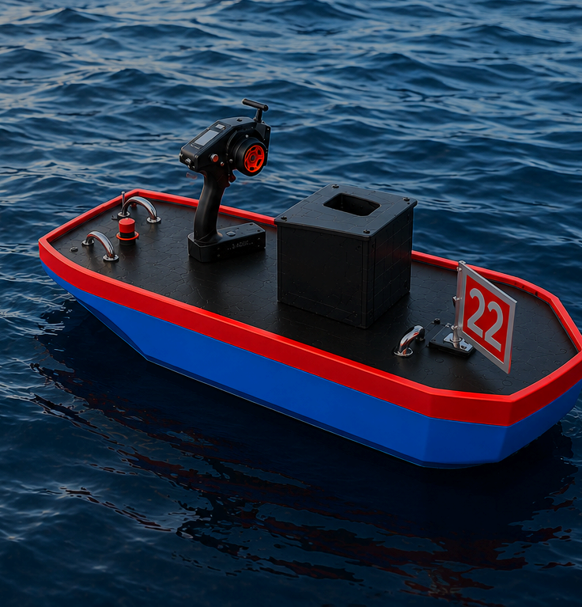
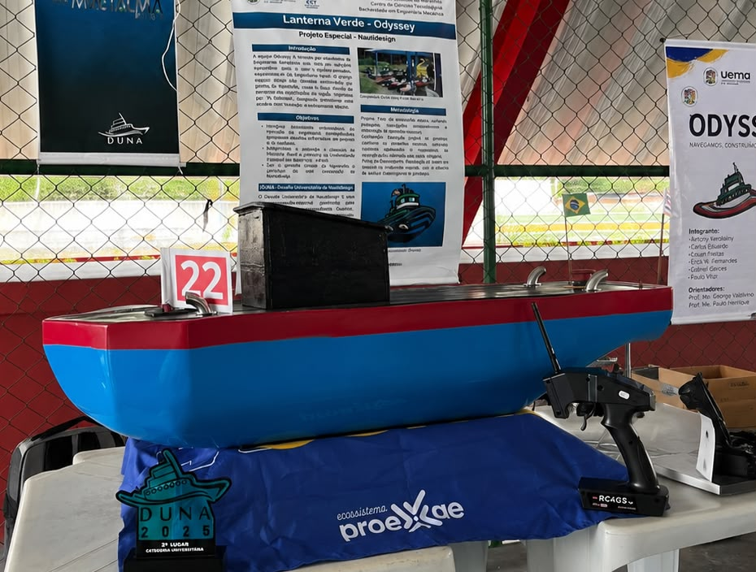
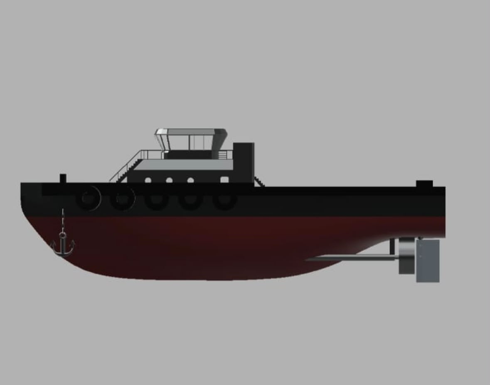
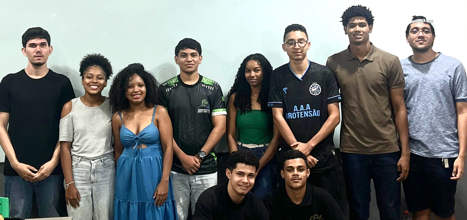

Somos a equipe de nautidesign da Universidade Estadual do Maranhão (UEMA). Projetamos, construímos e testamos rebocadores em escala reduzida para representar o Maranhão nas principais competições de engenharia naval do Brasil.

Nautidesign é a prática de projetar e construir, na prática, uma embarcação em escala reduzida — unindo arquitetura naval, engenharia mecânica e sistemas embarcados em um único casco funcional. É isso que fazemos, prova após prova, desde o traço no software até a largada na água.
Modelagem do casco, análises hidrostáticas e hidrodinâmicas e definição da geometria do rebocador com base em embarcações reais de porto.
Corte do molde, laminação em fibra de vidro e resina, montagem do casco e acabamento — tudo feito à mão pela equipe, na bancada.
Propulsão, motorização, cabeamento e eletrônica embarcada, calibrados para força de reboque, velocidade e manobrabilidade.
Testes de flutuabilidade, estanqueidade e desempenho em piscina antes de cada competição — ajustando o barco prova a prova.
Arraste para girar e use o scroll para dar zoom.
DUNA — Desafio Universitário de Nautidesign é a principal competição de rebocadores em escala reduzida do Brasil, criada em 2013 por estudantes de Engenharia Naval da UFSC Joinville. Reúne dezenas de equipes de todo o país, de universidades públicas e privadas, para uma disputa de projeto, construção e desempenho na água.
As embarcações são avaliadas em provas técnicas que testam força, velocidade, resistência e qualidade de projeto — e é nesse cenário nacional que a Odyssey representa a UEMA e o Maranhão pela primeira vez.
Em sua primeira participação no maior desafio de nautidesign do país, a equipe — formada por estudantes de Engenharia Mecânica da UEMA — venceu uma bateria da prova de Corrida já na estreia.
Cada casco é um novo ciclo de projeto: aprendemos com a prova anterior e embarcamos essas melhorias no próximo protótipo.

Estreia 2025Primeiro casco da equipe, levado ao DUNA 2025. Projetado para equilíbrio entre velocidade e estabilidade na prova de Corrida.

Em construçãoNova geração do casco, com ajustes de projeto voltados para ganho de força de tração na prova de Bollard Pull.
Estudantes de Engenharia Mecânica da UEMA, sob o comando da diretoria da equipe.

Orienta a equipe Odyssey na Universidade Estadual do Maranhão (UEMA).
Estudantes de Engenharia Mecânica se reúnem para formar a primeira equipe de nautidesign do Maranhão, com apoio da Pró-Reitoria de Extensão e Assuntos Estudantis (Proexae/UEMA).
ConcluídoPrimeira participação nacional da equipe, com 1º lugar em uma bateria da prova de Corrida e 20ª colocação geral entre as equipes do país.
ConcluídoNovo ciclo de projeto e construção com foco em subir na classificação geral e evoluir nas provas de Bollard Pull e Prova de Projeto.
Em preparaçãoSomos a primeira equipe de nautidesign do Maranhão — e estamos sempre em busca de novos integrantes, apoiadores e parceiros para o próximo casco.
Fale com a equipe